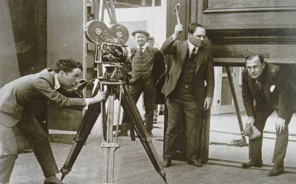
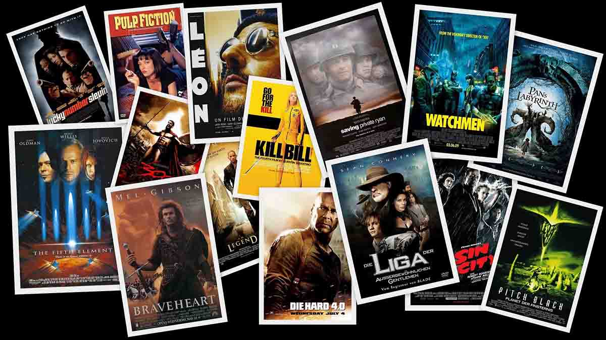

Historia
La historia del cine se inició con los egipcios, los griegos y los romanos. Ellos mostraron la idea del movimiento a través de dibujos sucesivos. Con el tiempo, en Asia se empezaron a realizar juegos de luces y sombras que consistían en proyectar las sombras sobre la superficie blanca de una tela por luces a espaldas de los espectadores. A su vez, este invento inspiró a la creación de la "Linterna mágica" en el siglo XVII. Un aparato óptico que se basaba en una caja que capturaba imágenes del exterior y las proyectaba en su interior para luego funcionar a la inversa. Más tarde, en Gran Bretaña (siglo XIX) junto con la revolución industrial llegaron nuevos inventos como la máquina a vapor, la bombilla de luz, los nuevos transportes y entre todos ellos la fotografía. Durante esta época se inventó la primera cámara oscura fabricada por Charles y Jacques Vincent Louis Chevalier en París. Posteriormente se inventó el Quinetoscopio, creación de Thomas Edison. Este artefacto consistía en captar imágenes en movimiento para luego plasmarlas en una cinta. El Quinetoscopio fue lo que los inspiró a los hermanos Lumière ya que ambos querían reflejar imágenes en movimiento por lo que consiguieron un kinetoscopio y con él crearon su propio artefacto, el cinematógrafo. Su mecanismo se basaba en un disco giratorio que ponía a correr una cinta a 16 cuadros por segundo. El 28 de diciembre de 1895, los hermanos Lumière proyectaron públicamente la salida de obreros de una fábrica francesa en Lyon, la demolición de un muro, la llegada de un tren y un barco saliendo del puerto.1 El éxito de este invento fue inmediato, no solo en Francia, sino también en toda Europa y América del Norte, donde Thomas Edison ya había grabado numerosas escenas que un espectador a la vez podía ver a través de un kinetoscopio. En un año, los hermanos Lumière crearon más de diez películas, marcadas por la ausencia de actores y los decorados naturales, la brevedad, la ausencia de montaje y la posición fija de la cámara. Sin embargo, Alice Guy fue la primera persona en ser realizadora de una película, la fundadora del cine narrativo y de la narración cultural superando el cine de demostración de los hermanos Lumière y sentando las bases de lo que en el futuro se ha considerado ficción. También fue la primera persona que logró mantenerse económicamente a través de esta profesión. Su primera película -y por tanto, la primera película de la historia del cine- fue El hada de los repollos (La Fée aux Choux, 1896). Realizó muchas más películas, entre ellas Sage-femme de première classe (1902) y La Esméralda (1905). Tras el éxito de Guy, Georges Méliès decidió introducirse en esta profesión. Realizó películas con historias y decorados fantásticos, como "Fausto" y "Barba Azul" (1901), desarrolló las nuevas técnicas cinematográficas, sobre todo con Viaje a la Luna (1902) y con Viaje a través de lo imposible (1904), aplicando la técnica teatral ante la cámara y creando los primeros efectos especiales y la ciencia ficción filmada. A partir de entonces, la cinematografía no hizo más que mejorar y surgieron grandes directores como Murnau, Erich von Stroheim y Charles Chaplin. En Estados Unidos se hicieron películas de aventuras, como las de Douglas Fairbanks y dramas románticos como las de Valentino. Sin embargo, las de mayor belleza fueron fruto de la escuela cómica americana nacida a partir de la comedia de Mack Sennett, basada en slapsticks y en la estereotipación de figuras sociales como el policía o el gordo, el avaro y el bigotudo burgués. Aquí recordemos especialmente a Buster Keaton y a Charles Chaplin. En 1927, se estrenó la primera película con sonido El cantante de jazz, a partir de la cual el cine tal y como se conocía dejó de existir y de un lenguaje en que primaba la expresividad de segmentos que se contrastaban y juntaban se impuso una mayor continuidad del relato y mayor fluidez argumental. Ese mismo año apareció el doblaje. En 1935 se filmó en Technicolor La feria de la vanidad (Becky Sharp), de Rouben Mamoulian; aunque artísticamente el color consiguió su máxima plenitud con Lo que el viento se llevó (1939). La primera proyección pública de cine digital en Europa se realizó en París,2 el 2 de febrero de 2000, utilizando MEMS (DLP (Procesado digital de luz) CINEMA) desarrollado por Texas Instruments.

Géneros cinematográficos
En la teoría cinematográfica, los géneros son una forma de clasificar a las películas en grupos. Cada género está formado por películas que comparten ciertas similitudes, ya sea en su estilo, su temática, su intencionalidad, su forma de producción o el público al que van dirigidas. Atendiendo a su forma de producción y su intencionalidad, cabe distinguir géneros como los siguientes: Cine comercial: Son las películas creadas por la industria cinematográfica orientadas al gran público y con la generación de beneficios económicos como objetivo principal. A esta categoría pertenecen la mayoría de las películas que se proyectan en las salas de cine, y algunas de ellas son promocionadas mediante grandes campañas de publicidad. Cine independiente: Una película independiente es una película de bajo presupuesto y hecha por pequeñas productoras. Una película independiente no es realizada por los grandes estudios. Cine de animación: El cine de animación es aquel en el que se usan mayoritariamente técnicas de animación. El cine de imagen real registra imágenes reales en movimiento continuo, descomponiéndose en un número discreto de imágenes por segundo. En el cine de animación no existe movimiento real que registrar, sino que se producen las imágenes individualmente y una por una (mediante dibujos, modelos, objetos y otras múltiples técnicas, como el Stop Motion), de forma tal que al proyectarse consecutivamente se produzca la ilusión de movimiento. Es decir, que mientras en el cine de imagen real se analiza y descompone un movimiento real, en el cine de animación se construye un movimiento inexistente en la realidad. Cine documental: El cine documental es el que basa su trabajo en imágenes tomadas de la realidad. Generalmente se confunde documental con reportaje, siendo el primero eminentemente un género cinematográfico, muy ligado a los orígenes del cine, y el segundo un género televisivo. Docuficción, híbrido entre el documental y la ficción, es un género practicado desde el primer documental, que se renueva desde finales de los años cincuenta. Cine experimental: El cine experimental es aquel que utiliza un medio de expresión más artístico, olvidándose del lenguaje audiovisual clásico, rompiendo las barreras del cine narrativo estrictamente estructurado y utilizando los recursos para expresar y sugerir emociones, experiencias, sentimientos, utilizando efectos plásticos o rítmicos, ligados al tratamiento de la imagen o el sonido. Cine de autor: El concepto de cine de autor fue acuñado por los críticos de los Cahiers du Cinéma para referirse a un cierto cine en el que el director tiene un papel preponderante en la toma de todas las decisiones, y en donde toda la puesta en escena obedece a sus intenciones. Suele llamarse de esta manera a las películas realizadas basándose en un guion propio y al margen de las presiones y limitaciones que implica el cine de los grandes estudios comerciales, lo cual le permite una mayor libertad a la hora de plasmar sus sentimientos e inquietudes en la película. Sin embargo, grandes directores de la industria, como Alfred Hitchcock, también pueden ser considerados «autores» de sus películas. Se define de acuerdo con su ámbito de aplicación y recepción, ya que no suele tratarse de un cine ligado a la industria, y no se dirige a un público amplio sino específico, y comparte a priori un interés por productos que se hallan fuera de los cánones clásicos. Un subgénero importante podría ser el cine abstracto. Cine ambiental: El cine no solamente ha puesto en contacto al hombre con la naturaleza en diversos casos, sino que además ha sido, y sigue siendo en ocasiones, militante activo en la lucha por la defensa del medio ambiente. Además, el cine ha sido desde su nacimiento, el más fuerte medio de transmisión de conocimientos y de culturas, aportando a los espectadores infinitas posibilidades de encuentro con paisajes, naturaleza, lugares y costumbres. El negocio del cine Históricamente una película obtenía sus ingresos por alquilar los derechos de exhibición en un cine y, a su vez, el dueño del cine cobraba una entrada a todo aquel que quisiera ver la película. Con los ingresos de esas entradas, ese propietario del cine pagaba: Gastos de personal, limpieza, luz, etc. Promoción local (en carteles y periódicos locales): se paga al 50/50 con la casa productora. Cuota acordada con la productora de la película, que normalmente es variable y depende del éxito de la película pero puede estar entre un 30 a un 70 por ciento del precio de entrada. El resto lo guardaba como beneficio. Así funcionaba hasta la llegada de la TV. Con la televisión, la casa productora, al mismo tiempo distribuidora de los derechos, acuerda con el canal de TV el alquiler de su película por un precio y unas condiciones: Se podrá transmitir la película durante un período acordado, normalmente de tres a cinco años por un precio total. Se limita el número de veces que en ese período el canal de TV podrá repetir la transmisión de la misma película, normalmente entre dos y cinco veces, máximo, para no quemar la película. Al poco tiempo, aparecieron nuevas formas de exhibición o transmisión, como por ejemplo: Pago por visión (pay-per-view): esta ventana se suele abrir a los seis meses del estreno, por unos pocos meses. Canales de TV de pago, tipo Showtime o HBO: la ventana se abre al año, durante un año. A continuación viene los networks o grandes cadenas de TV, cuya ventana se abre a los dos años, normalmente por tres más. Sindicación de canales de TV: esto es agrupación de estaciones de TV que solo cubren un área local, no nacional. Esta ventana está abierta cuando se acaba la de las grandes cadenas y se está constantemente renovando, con distintos distribuidores. Lo normal es un contrato por cinco o siete años. A su vencimiento, se vuelve a vender esos mismos derechos a otro o al mismo, por otros tantos años y así constantemente. 
Premios
En el mundo del cine hay varios premios de prestigio mundialmente reconocidos. Unos de los premios más valorados son los premios Óscar. En los premios Grammy también hay varias categorías dedicadas al cine musical, como el premio Grammy al mejor vídeo musical y el premio Grammy a la mejor película musical.

Enlaces externos
Historia
En 1891, el gran inventor norteamericano (se dice que era de origen mexicano) Thomas Alva Edison patenta el Kinetoscopio, e inventa el primer gag de la historia del cine, cuando filma a uno de sus obreros, Fred Ott, estornudando. El público que vio la película se echó a reír; así nace la comedia cinematográfica. Posteriormente, los hermanos Lúmiere, en Francia, realizan El regador regado (1895) cuyo gag central (un hombre pisa una manguera bloqueando el paso del agua, la examina, el primer hombre se mueve y el agua sale a toda presión golpeando al segundo en la cara) ha sido un clásico de la comedia desde entonces. Puede decirse que el primer rey de la comedia fue el francés Max Linder, porque crea su alter ego cinematográfico de un pulcro aspirante a caballero, impecablemente vestido, amante de las mujeres y la buena vida, cuya superficial elegancia se veía frustrada por diversas desventuras.
Recomendaciones
Comedias para reírse un rato las hay muchas entre las películas de Netflix, pero estas de aquí son las mejores. De entre los centenares de títulos que se pueden encontrar en la plataforma de streaming, hemos hecho una selección heterogénea, salvaje y, sobre todo, absolutamente delirante. Desde comedias adolescentes hasta sátiras que se cuentan entre las mejores películas originales de Netflix, pasando por la música, el retrato histórico, la animación y también las películas de Netflix más vistas de su historia, aquí os dejamos unas cuantas películas cómicas que no querréis perderos por nada del mundo. Aunque, si lo que buscas son las mejores series de comedia de Netflix, también las tenemos, así como las mejores series de terror en Netflix por si cambias radicalmente de opinión sobre el género de preferencia. En esta lista encontraremos títulos como 'No mires arriba', una de esas buenas películas de Netflix aclamadas por la crítica y con un reparto espectacular liderado por Leonardo DiCaprio y Jennifer Lawrence. Otras mezclan la comedia con otros géneros, como 'Súperlópez', que es una de las mejores películas de acción en Netflix además de una comedia rematadamente divertida a través de la idea del Superman español, con un Dani Rovira en estado de gracia y suficientes aciertos como para considerarla una de las mejores películas españolas en Netflix. A pesar de tener grandes ejemplos, es cierto que a veces cuesta encontrar una película que realmente nos vaya a hacer reír, que encaje con nuestra compañía o que sepamos que es de nuestro estilo. Siendo sinceros: nunca lo vamos a saber al 100%, así que déjate llevar por nuestras recomendaciones, que no son pocas. ¿Buscas las mejores películas de Netflix para ver en familia? Cintas como 'Los Mitchell contra las máquinas' te van a encantar, con una mezcla genial de aventuras, referencias culturales, mensaje social y, claro, comedia a raudales. ¿Quieres tirar de clásicos de otras épocas al más puro estilo de las mejores series de época de Netflix? Netflix tiene algunos de los mejores, desde 'Los caballeros de la mesa cuadrada', una de esas locuras irresistibles de los Monty Python, hasta 'Mujeres al borde de un ataque de nervios' y otras joyas que rescatar entre las mejores películas de Pedro Almodóvar. ¿Más comedias a la española? Ahí tienes esperándote 'Loco por ella', con un tono más romántico, o 'Kiki, el amor se hace', que lo centra todo alrededor del sexo y por eso se cuenta entre las mejores películas eróticas en Netflix. ¿Ya sabes qué película vas a ver esta noche? Lánzate con nuestras propuestas y no te vas a arrepentir. Aquí van: las mejores comedias de Netflix.